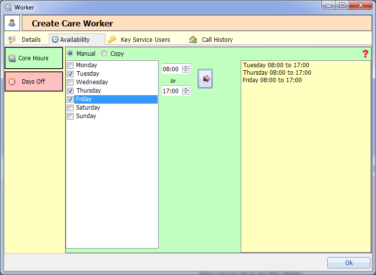

In the core hour section you can pick the hours that a worker works in a week.
Manual
To enter new hours, check the days and then pick the time. Clicking the arrow button will assign those hours to the worker.
If you want to remove incorrect hours just click on the hours on the right and hit the delete key.
Note: Hours can't overlap, complex hours must be entered manually.

Copy
The copy function allows you to copy another workers hours. By clicking on the workers name it will copy the hours into the area on the right.